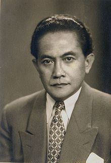
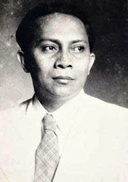
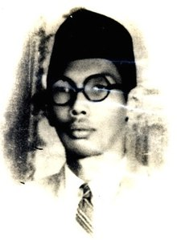
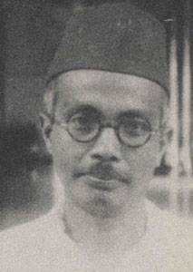

Boleh dikatakan, Sumpah Pemuda adalah puncak dari perjuangan masa kebangkitan nasional pasca politik etis menuju Kemerdekaan Indonesia. Sejarah mencatat 13 tokoh penting di balik sukses Kongres Pemuda II melahirkan Sumpah Pemuda, 93 tahun silam. Berikut profil singkat ke-13 tokoh tersebut.
1. Soegondo Djojopoespito
Soegondo Djojopoespito adalah ketua panitia Kongres Pemuda II. Lahir lahir di Tuban, Jawa Timur pada 22 Februari 1905, Soegondo dikenal sebagai aktivis pendidikan. Sebelum tinggal di kediaman Ki Hajar Dewantara, Soegondo semasa sekolah di HIS juga dititipkan pamannya di pondok HOS Tjokroaminoto di Surabaya. Soegondo meninggal di Yogyakarta di usia 73 tahun pada 23 April 1978
2. Soenario Sastrowardoyo

Soenario Sastrowardoyo merupakan penasihat panitia Kongres Pemuda II. Lahir di Madiun, Jawa Timur pada 28 Agustus 1902, Soenario salah satu pencetus Manifesto 1925 ketika menjadi pengurus Perhimpunan Indonesia (PI) di Belanda bersama Muhammad Hatta. Dia merupakan pengacara peraih gelar Meester in de rechten yang sering membela para aktivis pergerakan yang berurusan dengan polisi Hindia Belanda. Soenario meninggal pada 17 Mei 1997 di Jakarta.
3. Johannes Leimena
Johannes Leimena lahir di Ambon, Maluku, pada 1905 merupakan anggota Jong Ambon yang menjadi panitia Kongres Pemuda II. Dikenal sebagai aktivis pergerakan, J Leimena menjadi menteri paling lama di masa pemerintahan Presiden Soekarno, yaitu 20 tahun tanpa terputus.
Leimena masuk ke dalam 18 kabinet yang berbeda sejak Kabinet Sjahrir II (1946) sampai Kabinet Dwikora III (1966), Posisi sebagai Menteri Kesehatan, Wakil Perdana Menteri, Wakil Menteri Pertama maupun Menteri Sosial pernah disandangnya
4. Djoko Marsaid

Djoko Marsaid merupakan ketua Jong Java yang menjadi wakil ketua saat Kongres Pemuda II berlangsung.
5. Muhammad Yamin
Muhammad Yamin lahir pada 24 Agustus 1903 di Sawahlunto, Sumatera Barat adalah anggota Sumatra Bond. Dia dikenal sebagai sastrawan, sejarawan, budayawan seklaigus politikus, dan ahli hukum yang dihormati. Yamin adalah salah satu perintis puisi modern Indonesia dan namanya diabadikan sebagai Pahlawan Nasional.
6. Amir Sjarifoeddin Harahap
Lahir di Medan pada 17 April 1907, Amir Syarifudin banyak menyumbang ide-ide brilian pada saat perumusan Sumpah Pemuda. Dikenal sebagai politikus sayap kiri (sosialis), Amir kemudian menjelma menjadi tokoh Partai Komunis Indonesia (PKI) paling menonjol. Amir pernah menjabt sebagai menteri pada Kabinet Presidensial, Kabinet Sjahrir I, Kabinet Sjahrir II, dan Kabinet Sjahrir III. Dia juga pernah menjabat sebagai perdana menteri antara 3 Juli 1947 – 29 Januari 1948 dengan membentuk Kabinet Amir Sjarifoeddin I dan II. Amir Sjarifoeddin ditembak mati di Ngaliyan, Solo pada 19 Desember 1948 karena keterlibatannya dalam pemberontakan PKI Madiun tiga bulan sebelumnya.
7. WR Supratman

Wage Rudolf Suparman lahir pada 9 Maret 1903 di Purworejo, Jawa Tengah. Pada penutupan Kongres Pemuda II, WR Supratman memainkan sebuah lagu dengan instrumen biola yang sekarang dikenal sebagai kebangsaan Indonesia Raya. WR Supratman meninggal pada 17 Agustus 1938 di Surabaya, Jawa Timur. Dia ditetapkan sebagai Pahlawan Nasional dan tanggal lahirnya ditetakan sebagai Hari Musik Nasional.s
8. Sarmidi Mangoensarkoro

Lahir di Surakarta, 23 Mei 1904, Sarmidi Mangoensarkoro adalah tokoh penting Kongres Pemuda I dan II yang menyampaikan materi mengenai pentingnya pendidikan untuk Indonesia sebagai sebuah bangsa. Dikenal sebagai tokoh Taman Siswa, Sarmidi pernah dipercaya menjadi Menteri Pendidikan dan Kebudayaan Indonesia pada 1949-1950.
2. Soenario Sastrowardoyo
Soenario Sastrowardoyo merupakan penasihat panitia Kongres Pemuda II. Lahir di Madiun, Jawa Timur pada 28 Agustus 1902, Soenario salah satu pencetus Manifesto 1925 ketika menjadi pengurus Perhimpunan Indonesia (PI) di Belanda bersama Muhammad Hatta. Dia merupakan pengacara peraih gelar Meester in de rechten yang sering membela para aktivis pergerakan yang berurusan dengan polisi Hindia Belanda. Soenario meninggal pada 17 Mei 1997 di Jakarta.
2. Soenario Sastrowardoyo
Soenario Sastrowardoyo merupakan penasihat panitia Kongres Pemuda II. Lahir di Madiun, Jawa Timur pada 28 Agustus 1902, Soenario salah satu pencetus Manifesto 1925 ketika menjadi pengurus Perhimpunan Indonesia (PI) di Belanda bersama Muhammad Hatta. Dia merupakan pengacara peraih gelar Meester in de rechten yang sering membela para aktivis pergerakan yang berurusan dengan polisi Hindia Belanda. Soenario meninggal pada 17 Mei 1997 di Jakarta.
2. Soenario Sastrowardoyo
Soenario Sastrowardoyo merupakan penasihat panitia Kongres Pemuda II. Lahir di Madiun, Jawa Timur pada 28 Agustus 1902, Soenario salah satu pencetus Manifesto 1925 ketika menjadi pengurus Perhimpunan Indonesia (PI) di Belanda bersama Muhammad Hatta. Dia merupakan pengacara peraih gelar Meester in de rechten yang sering membela para aktivis pergerakan yang berurusan dengan polisi Hindia Belanda. Soenario meninggal pada 17 Mei 1997 di Jakarta.
2. Soenario Sastrowardoyo
Soenario Sastrowardoyo merupakan penasihat panitia Kongres Pemuda II. Lahir di Madiun, Jawa Timur pada 28 Agustus 1902, Soenario salah satu pencetus Manifesto 1925 ketika menjadi pengurus Perhimpunan Indonesia (PI) di Belanda bersama Muhammad Hatta. Dia merupakan pengacara peraih gelar Meester in de rechten yang sering membela para aktivis pergerakan yang berurusan dengan polisi Hindia Belanda. Soenario meninggal pada 17 Mei 1997 di Jakarta.
2. Soenario Sastrowardoyo
Soenario Sastrowardoyo merupakan penasihat panitia Kongres Pemuda II. Lahir di Madiun, Jawa Timur pada 28 Agustus 1902, Soenario salah satu pencetus Manifesto 1925 ketika menjadi pengurus Perhimpunan Indonesia (PI) di Belanda bersama Muhammad Hatta. Dia merupakan pengacara peraih gelar Meester in de rechten yang sering membela para aktivis pergerakan yang berurusan dengan polisi Hindia Belanda. Soenario meninggal pada 17 Mei 1997 di Jakarta.


.jpg)